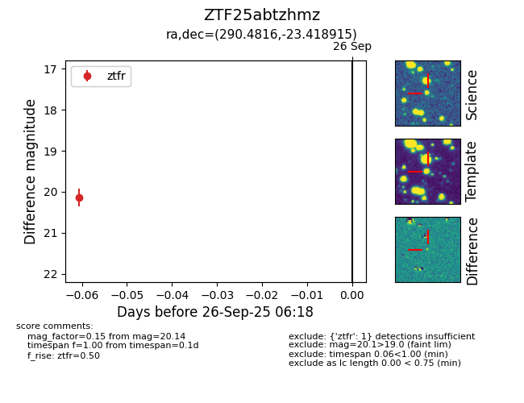

FINK: ZTF25abtzhmz
Lasair: ZTF25abtzhmz
ALeRCE: ZTF25abtzhmz
ZTF25abtzhmz (ztf,fink)
equatorial (ra, dec) = (290.4816,-23.41891)
galactic (l, b) = (14.7778,-16.83129)

last ztfr=20.14
1 ztfr detections